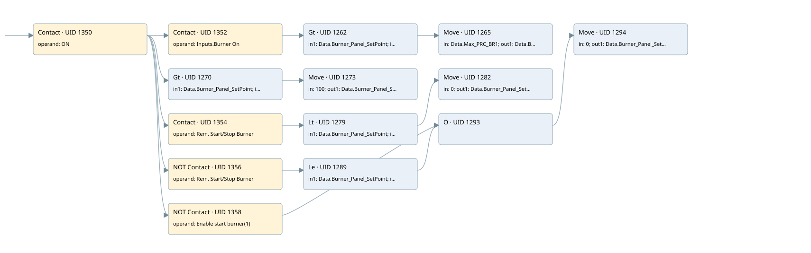

burner air range limits
burner control · 검색 색인 순서 19 · 원본 내부 NID 추정 18
백업 PLF 원본의 2701901 바이트 위치에서 복원한 XML. 검색 문서 1872의 객체 키 16102200ef10000000000000와 연결했다. 이름 해석 21/21개. 남은 RefId는 상수 또는 미해석 참조다.
연결 구조 다시 그리기
원본 Part/PCon/Wire를 이용한 연결도다. TIA 화면의 래더 배치 또는 실행 결과를 재현한 그림은 아니다. 핀 연결은 아래 표와 원본 XML을 기준으로 읽는다. 노드 위에 마우스를 두면 피연산자 이름을 볼 수 있다.

접점·코일·블록과 피연산자
| Part UID | Gate | Negated 핀 | 연결 피연산자 |
|---|---|---|---|
| 1350 | Contact | operand = ON | |
| 1352 | Contact | operand = Inputs.Burner On | |
| 1262 | Gt | in1 = Data.Burner_Panel_SetPoint; in2 = Data.Max_PRC_BR1 | |
| 1265 | Move | in = Data.Max_PRC_BR1; out1 = Data.Burner_Panel_SetPoint | |
| 1270 | Gt | in1 = Data.Burner_Panel_SetPoint; in2 = 100 | |
| 1273 | Move | in = 100; out1 = Data.Burner_Panel_SetPoint | |
| 1354 | Contact | operand = Rem. Start/Stop Burner | |
| 1279 | Lt | in1 = Data.Burner_Panel_SetPoint; in2 = 0 | |
| 1282 | Move | in = 0; out1 = Data.Burner_Panel_SetPoint | |
| 1356 | Contact | operand | operand = Rem. Start/Stop Burner |
| 1289 | Le | in1 = Data.Burner_Panel_SetPoint; in2 = 0 | |
| 1358 | Contact | operand | operand = Enable start burner(1) |
| 1293 | O | ||
| 1294 | Move | in = 0; out1 = Data.Burner_Panel_SetPoint |
접점 경로를 펼친 조건식
Contact·O/A·비교기의 원본 연결을 읽기 쉽게 펼친 보조 해석이다. POWER는 전원 레일 시작을 뜻한다. 호출 블록·에지·타이머의 내부 동작과 다중 쓰기 순서는 이 표로 실행 검증하지 않았다. 미해석 핀과 RefId는 원문 연결표에서 확인한다.
| UID | 동작 | 대상 | 원본 접점 경로 | 내용 |
|---|---|---|---|---|
| 1265 | Move | Data.Burner_Panel_SetPoint | ((ON AND Inputs.Burner On) AND [Data.Burner_Panel_SetPoint > Data.Max_PRC_BR1]) | Move 입력 Data.Max_PRC_BR1 |
| 1273 | Move | Data.Burner_Panel_SetPoint | (ON AND [Data.Burner_Panel_SetPoint > 100]) | Move 입력 100 |
| 1282 | Move | Data.Burner_Panel_SetPoint | ((ON AND Rem. Start/Stop Burner) AND [Data.Burner_Panel_SetPoint < 0]) | Move 입력 0 |
| 1294 | Move | Data.Burner_Panel_SetPoint | (((ON AND NOT [Rem. Start/Stop Burner]) AND [Data.Burner_Panel_SetPoint <= 0]) OR (ON AND NOT [Enable start burner(1)])) | Move 입력 0 |
원본 배선 연결
| Wire UID | 동일 Wire 연결 끝점 |
|---|---|
| 1360 | Powerrail {} ↔ Part 1350.in |
| 1318 | ORef 1297 (ON) ↔ Part 1350.operand |
| 1351 | Part 1350.out ↔ Part 1352.in ↔ Part 1270.pre ↔ Part 1354.in ↔ Part 1356.in ↔ Part 1358.in |
| 1319 | ORef 1298 (Inputs.Burner On) ↔ Part 1352.operand |
| 1353 | Part 1352.out ↔ Part 1262.pre |
| 1320 | ORef 1299 (Data.Burner_Panel_SetPoint) ↔ Part 1262.in1 |
| 1321 | ORef 1300 (Data.Max_PRC_BR1) ↔ Part 1262.in2 |
| 1322 | Part 1262.out ↔ Part 1265.en |
| 1324 | ORef 1301 (Data.Max_PRC_BR1) ↔ Part 1265.in |
| 1325 | Part 1265.out1 ↔ ORef 1302 (Data.Burner_Panel_SetPoint) |
| 1326 | ORef 1303 (Data.Burner_Panel_SetPoint) ↔ Part 1270.in1 |
| 1327 | ORef 1304 (100) ↔ Part 1270.in2 |
| 1328 | Part 1270.out ↔ Part 1273.en |
| 1330 | ORef 1305 (100) ↔ Part 1273.in |
| 1331 | Part 1273.out1 ↔ ORef 1306 (Data.Burner_Panel_SetPoint) |
| 1332 | ORef 1307 (Rem. Start/Stop Burner) ↔ Part 1354.operand |
| 1355 | Part 1354.out ↔ Part 1279.pre |
| 1333 | ORef 1308 (Data.Burner_Panel_SetPoint) ↔ Part 1279.in1 |
| 1334 | ORef 1309 (0) ↔ Part 1279.in2 |
| 1335 | Part 1279.out ↔ Part 1282.en |
| 1337 | ORef 1310 (0) ↔ Part 1282.in |
| 1338 | Part 1282.out1 ↔ ORef 1311 (Data.Burner_Panel_SetPoint) |
| 1339 | ORef 1312 (Rem. Start/Stop Burner) ↔ Part 1356.operand |
| 1357 | Part 1356.out ↔ Part 1289.pre |
| 1340 | ORef 1313 (Data.Burner_Panel_SetPoint) ↔ Part 1289.in1 |
| 1341 | ORef 1314 (0) ↔ Part 1289.in2 |
| 1342 | Part 1289.out ↔ Part 1293.in1 |
| 1344 | ORef 1315 (Enable start burner(1)) ↔ Part 1358.operand |
| 1359 | Part 1358.out ↔ Part 1293.in2 |
| 1345 | Part 1293.out ↔ Part 1294.en |
| 1347 | ORef 1316 (0) ↔ Part 1294.in |
| 1348 | Part 1294.out1 ↔ ORef 1317 (Data.Burner_Panel_SetPoint) |
식별자 해석 근거 21개
| ORef UID | RefId | 이름 | IdentXmlPart 파일 | 해석 방법 |
|---|---|---|---|---|
| 1297 | 1 | ON | 0582-IdentXmlPart.xml | UID/RID + search-text + NID agreement |
| 1298 | 227 | Inputs.Burner On | 0585-IdentXmlPart.xml | UID/RID + search-text + NID agreement |
| 1299 | 71 | Data.Burner_Panel_SetPoint | 0585-IdentXmlPart.xml | UID/RID + search-text + NID agreement |
| 1300 | 108 | Data.Max_PRC_BR1 | 0585-IdentXmlPart.xml | UID/RID + search-text + NID agreement |
| 1301 | 108 | Data.Max_PRC_BR1 | 0585-IdentXmlPart.xml | UID/RID + search-text + NID agreement |
| 1302 | 71 | Data.Burner_Panel_SetPoint | 0585-IdentXmlPart.xml | UID/RID + search-text + NID agreement |
| 1303 | 71 | Data.Burner_Panel_SetPoint | 0585-IdentXmlPart.xml | UID/RID + search-text + NID agreement |
| 1304 | 154 | 100 | 0586-IdentXmlPart.xml | literal candidate: UID/RID/NID + nearby named declarations + search-text agreement |
| 1305 | 154 | 100 | 0586-IdentXmlPart.xml | literal candidate: UID/RID/NID + nearby named declarations + search-text agreement |
| 1306 | 71 | Data.Burner_Panel_SetPoint | 0585-IdentXmlPart.xml | UID/RID + search-text + NID agreement |
| 1307 | 94 | Rem. Start/Stop Burner | 0582-IdentXmlPart.xml | UID/RID + search-text + NID agreement |
| 1308 | 71 | Data.Burner_Panel_SetPoint | 0585-IdentXmlPart.xml | UID/RID + search-text + NID agreement |
| 1309 | 52 | 0 | 0586-IdentXmlPart.xml | literal candidate: UID/RID/NID + nearby named declarations + search-text agreement |
| 1310 | 52 | 0 | 0586-IdentXmlPart.xml | literal candidate: UID/RID/NID + nearby named declarations + search-text agreement |
| 1311 | 71 | Data.Burner_Panel_SetPoint | 0585-IdentXmlPart.xml | UID/RID + search-text + NID agreement |
| 1312 | 94 | Rem. Start/Stop Burner | 0582-IdentXmlPart.xml | UID/RID + search-text + NID agreement |
| 1313 | 71 | Data.Burner_Panel_SetPoint | 0585-IdentXmlPart.xml | UID/RID + search-text + NID agreement |
| 1314 | 52 | 0 | 0586-IdentXmlPart.xml | literal candidate: UID/RID/NID + nearby named declarations + search-text agreement |
| 1315 | 92 | Enable start burner(1) | 0582-IdentXmlPart.xml | UID/RID + search-text + NID agreement |
| 1316 | 52 | 0 | 0586-IdentXmlPart.xml | literal candidate: UID/RID/NID + nearby named declarations + search-text agreement |
| 1317 | 71 | Data.Burner_Panel_SetPoint | 0585-IdentXmlPart.xml | UID/RID + search-text + NID agreement |
검색 코드 보조 자료
참조 명칭을 찾기 위한 자료이며 실행 순서나 AND/OR 관계는 위 연결표로 확인한다.
"on" "inputs"."burner on" "data".burner_panel_setpoint "data".max_prc_br1 move "data".max_prc_br1 "data".burner_panel_setpoint 100 move 100 "data".burner_panel_setpoint "rem. start/stop burner" "data".burner_panel_setpoint 0 move 0 "data".burner_panel_setpoint "rem. start/stop burner" "data".burner_panel_setpoint 0 move 0 "data".burner_panel_setpoint "enable start burner(1)" "data".burner_panel_setpoint